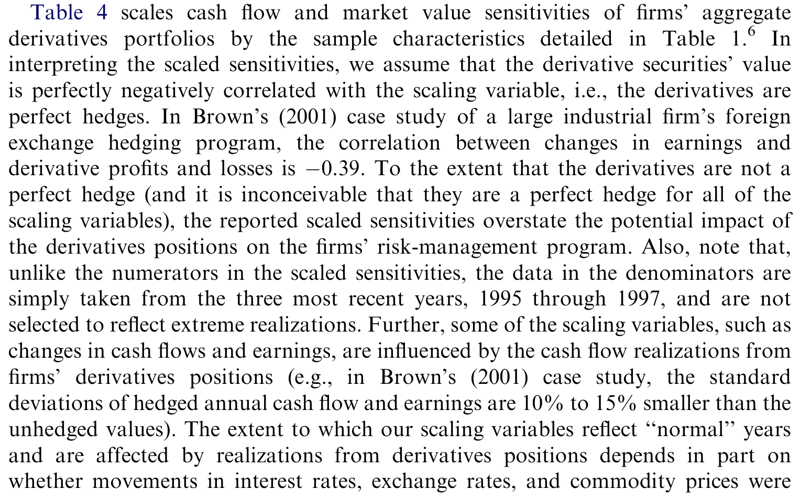
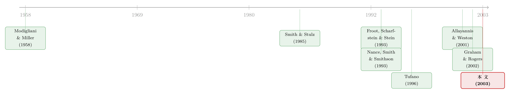

公司到底用衍生品对冲了多少风险？——一把「故意往大了算」的尺子，量出了一个尴尬的小数
本文读的是 Guay & Kothari (2003, Journal of Financial Economics)：作者手工拆开 234 家大型非金融公司的衍生品头寸，发现即便利率、汇率、商品价格同时发生「三个标准差」的极端冲击，中位数公司的整个衍生品组合也只能带来约 $15 million 的现金流、$30 million 的市值变动——相对于这些公司动辄上亿的经营现金流、上百亿的股权风险敞口，这是一个小到令人尴尬的数字。于是一个更尖锐的问题被抛了出来：那一整片「衍生品很重要」的实证文献，是不是从一开始就站在了沙地上？
1 引言：一个被所有人默认、却没人量过的前提
公司金融里有一类问题，看上去人人都知道答案，可一旦你追问「到底有多少」，就会发现没人真的数过。公司用衍生品对冲风险，就是这样一个问题。
过去二十年，围绕「企业为什么对冲」积累了浩如烟海的实证研究。Nance、Smith 和 Smithson (1993)、Mian (1996)、Geczy、Minton 和 Schrand (1997)、Allayannis 和 Ofek (1998)、Guay (1999)……一篇接一篇，用「公司是否使用衍生品」这个 0/1 哑变量，或者用衍生品的 名义本金 (notional principal)，去检验各种风险管理理论：杠杆高的公司是不是更爱对冲？研发投入多、成长机会大的公司是不是更爱对冲？这些文献的潜台词是同一句话——衍生品是企业风险管理的重要组成部分，所以「用没用衍生品」可以当作「对没对冲风险」的代理变量。
可问题是，没有人停下来问一句：这些公司手里的那一摞利率互换、外汇远期，真的能对冲掉多少风险？名义本金看起来动辄上亿，但名义本金不是风险敞口——一份名义本金 1 亿美元、还有三个月就到期的利率互换，它对利率变动的真实敏感度，可能小到可以忽略不计。
这正是本文的切入点。Guay 和 Kothari 想做的，不是再去检验一个新的对冲假说，而是退回到所有这些研究共同踩着的那块地基上，老老实实地称一称它的重量：对于一个真实的衍生品组合，当标的资产价格发生极端变动时，它到底能给公司带来多少现金流、多少市值变化？
这是一篇典型的「测量型」论文。它的贡献不在于一个新模型或一个聪明的工具变量，而在于第一次用大样本、自下而上的方法，把一个被默认了二十年的「量级」给量了出来——而量出来的结果，恰好和文献的默认假设相反。
2 一把「故意往大了算」的尺子
要让结论有说服力，作者面对的第一个挑战是：如果最后量出来的数很小，怎么排除「是不是你低估了」的质疑？
他们的应对方式很漂亮，也很「石川式」地反直觉——故意把尺子做大。在估计衍生品对冲的风险量级时，作者刻意做了三个一律朝着「不低估衍生品重要性」方向倾斜的假设：
首先，假设每家公司的整个衍生品组合都在对冲下行风险。也就是说，每一份衍生品产生的现金流，都与公司未对冲的现金流 完全负相关 (perfectly negatively correlated)。现实中显然不会这么干净——有些头寸可能是投机、是套利、是会计目的，但作者一律当成「最有效的对冲」来算。
接着，把「极端变动」定义为标的资产价格历史时间序列（最近十年）年标准差的三倍。利率、汇率、商品价格各自来一个 三个标准差 (three standard deviations) 的冲击——这已经是相当极端的尾部情形了。
然后，也是最关键的一步：假设这三类标的资产同时发生三个标准差的变动，而且它们对衍生品组合现金流和市值的影响完全正相关。换句话说，所有的坏事在同一天一起发生，且效果叠加到最大。任何一个学过组合分散的人都知道，这种「同时、同向、满额」的设定，几乎不可能在真实世界出现——它系统性地高估了衍生品组合的敏感度。
在这三层「往大了算」的假设之下，作者对每家公司估计两个数：
- 现金流敏感度 (cash flow sensitivity)：极端冲击下，衍生品组合当期能实现的现金流；
- 市值敏感度 (market value sensitivity)：极端冲击下，衍生品组合整体市场价值的变化。
估计的原材料，来自公司在 10-K 中披露的每一份利率、汇率、商品衍生品的类型、名义本金、剩余到期期限。利率敏感度走久期 (duration) 的逻辑，期权头寸走 delta 的逻辑，外汇与商品则按各自标的的波动率折算——本质上是把「名义本金」这个粗糙的存量，翻译成「价格变动一单位、组合价值变动多少」的真实敏感度。这个翻译，正是名义本金所缺失的那一环。
记住这个逻辑结构：如果连这把「故意做大」的尺子量出来的数都很小，那么真实的数只会更小。 这是全文论证的支点。
3 数据：把 234 家公司的 10-K 一份份拆开
作者从 Compustat 出发，取 1995 年底按股权市值排名前 1000 的非金融公司，要求有 CRSP 收益数据、且为 12 月财年末。然后隔一家取一家，缩到 500 家——这是为了给后面手工收集 1997 年的衍生品披露数据减负。
这里有一个值得玩味的细节：为什么按 1995 年选样本，却收集 1997 年的衍生品数据？因为市值和近期业绩高度正相关，如果直接按 1997 年选「最大的公司」，选出来的多半是近两年表现好的；而把选样时点提前到 1995 年，能让样本公司在 1997 年的财务健康状况有更大的横截面差异，不至于全是「赢家」。这是一个很细致的、防止样本选择偏差的手法。
500 家里，72 家在 1995–1997 间并购或退市（小公司居多），15 家因为 10-K 显示其衍生品用于交易而非对冲被剔除，最终留下 413 家非金融公司。其中 234 家（56.7%）在 1997 财年末报告了衍生品头寸，是「衍生品使用者」；其余 179 家（43.3%）没有。1997 年的披露遵循 1994 年发布的 SFAS 119 准则。
样本公司有多大？如表 1 所示，全样本股权市值均值 $5,877 million、中位数 $1,673 million；使用者明显更大（均值 $8,571 million），非使用者更小（均值 $2,384 million）。这与「大公司更可能用衍生品」的既有发现一致。更重要的是后面要用作分母的那几个「企业风险基准」：衍生品使用者的年经营现金流均值（中位数）为 $735 ($178) million，投资现金流为 $637 ($178) million，净利润为 $318 ($74) million。这些都是上亿的量级——请记住 $178 million 这个中位数经营现金流，它马上要登场。
至于衍生品本身（表 2），外汇 (FX) 与利率 (IR) 衍生品构成了绝对主力。在 143 家外汇使用者里，124 家持有外汇远期与期货，只有 33 家持有外汇互换、27 家持有外汇期权；外汇远期与期货的名义本金中位数为 $64.4 million。看起来不算小——但名义本金的迷惑性，正在于此。
4 主要结果：极端冲击下，那个小到尴尬的数
现在，把尺子放上去。
在「利率、汇率、商品价格同时三个标准差变动」的极端情形下：
- 中位数公司的衍生品现金流敏感度是
$15 million（75 分位$81 million）； - 中位数公司的衍生品市值敏感度是约
$30 million（75 分位$126 million）。
也就是说，当一家中位数的衍生品使用者，遭遇利率、汇率、商品价格同时三个标准差冲击时，它整个衍生品组合的价值至多上升 $30 million，其中 $15 million 在当期变成现金流。
这个数大不大？把它放回分母里就一目了然。$30 million 的市值变动，对一家年经营现金流 $178 million、年投资现金流出 $178 million 的公司来说，不过是个零头。而真正具有冲击力的对比是这一组：作者估计，中位数公司股权价值对三个标准差利率变动的敏感度是 $825 million，对三个标准差汇率变动的敏感度是 $458 million。
请把这两个数并排放在一起看：
- 利率冲击下，股权价值会动 $825 million；衍生品组合只能动几十个 million。
- 汇率冲击下，股权价值会动 $458 million；衍生品组合同样只能动几十个 million。
衍生品对冲掉的，不过是企业整体风险敞口里很薄的一层皮。如表 4 所示，无论用经营现金流、现金流的绝对变动、净利润、现金持有量还是公司规模作分母，这个比例都小得可怜——而且别忘了，这还是在那把「故意做大」的尺子下量出来的。

Table 4: scales cash flow and market value sensitivities of firms’ aggregate
那么，是不是「该对冲的公司对冲得多」，所以平均数被一群不对冲的公司拉低了？作者也查了横截面。结果是：规模更大、投资机会更多、地理分布更分散、CEO 财富对股价敏感度更高的公司，确实用得多一些；多元回归里，地理多元化和投资机会的解释力最强。但所有分组的衍生品头寸量级都很小——没有哪一类公司是例外。换句话说，「衍生品很重要」这件事，在数据里找不到一个能站住脚的角落。
还有一个对方法论极具杀伤力的副产品：当你用「现金流/市值敏感度」而不是「名义本金」来度量对冲强度时，关于「什么因素驱动对冲」的推断会变得不一样。这等于在说：过去那些用名义本金做出来的结论，可能本身就是测量误差的产物。
5 反转：那一大片文献，怎么办？
如果故事到这里只是「公司其实没怎么用衍生品对冲」，那它顶多是个有趣的事实。但 Guay 和 Kothari 把刀锋转向了那一整片把衍生品当作「重要风险管理工具」的实证文献——这才是本文真正的张力所在。
举两个最著名的例子。Allayannis 和 Weston (2001) 发现，在一个宽样本里，使用外汇衍生品能让公司价值平均提升高达 4.87%；Graham 和 Rogers (2002) 发现衍生品使用与债务容量正相关，并据此推算衍生品带来的债务容量平均能提升公司价值 1.1%。这些都是经济上巨大的效应。
可问题来了：一个中位数公司的衍生品组合，在极端冲击下也只能撬动 $30 million 的市值——它凭什么能给公司价值带来 4.87% 的提升？本文的证据让这些结论变得可疑。作者的判断是：要么这些「价值提升」其实是被与衍生品使用相关的其他风险管理活动（比如经营性对冲）驱动的，衍生品只是搭了顺风车；要么干脆就是伪相关 (spurious)。
这同时也解释了那一摊「打架」的实证结果。比如「杠杆高 → 更爱对冲」这个被反复检验的假说，前面列举的研究里，三篇找到了正相关，三篇没找到；「代理成本/投资不足驱动对冲」（用市账比、研发支出度量）同样是各执一词。为什么会这样混乱？本文给出了一个干净的解释：如果衍生品只是企业整体风险管理里很小的一块，那么「用没用衍生品」就是一个充满噪声的代理变量，用噪声去检验理论，得到忽正忽负的结果，再正常不过。近期研究（Geczy 等, 2001；Pantzalis 等, 2001）也指出，经营性对冲 (operational hedging) 才是企业风险管理的重要组成——这与本文的解释完全咬合。（关于经营性对冲如何在坏年景里真正兑现价值，可参见《把好天气存进坏天气：多元化，是一张衰退里才兑现的「信用保单」》。）
那么，一个「经济上很小」的衍生品项目，是不是就意味着公司在犯错？不一定。作者很克制地给出了三种与最优化并不矛盾的解释：
- 微调：衍生品只是用来给整体风险管理（多含经营性对冲）做精细调节；况且非金融公司的大部分风险（经营风险）本就无法用利率/汇率/商品价格的标准衍生品合约对冲。还有公司为了拿到有利的会计处理，刻意把衍生品限定在交易型对冲上。
- 分散决策：大公司的分部经理出于内部预算、考核目的，对冲各自的特定交易——这些头寸对各分部可能很重要，但在整个公司层面加总起来就不大了。
- 非传统目的：投机，或者为了降低分析师预测误差而平滑业绩。
Brown (2001) 那篇针对一家大型跨国公司的案例研究，得出了几乎一模一样的结论：衍生品对现金流的影响有限，传统理论解释不了它的对冲，真正驱动衍生品项目的，是内部预算、绩效考核和分析师预测误差。本文用大样本，把这家公司的故事推广成了一个普遍现象。
本文也顺手敲打了「高管风险厌恶 → 对冲」这一支文献（Geczy 等, 1997；Knopf 等, 2002；Graham & Rogers, 2002）。这些研究假设衍生品能实质性地影响股价波动率。但如果多数公司的衍生品组合根本不足以让股票收益波动率出现可察觉的变化，那这个前提本身就站不住（亦见 Hentschel & Kothari, 2001）。
（关于外汇敞口究竟该怎么对冲、对冲又能不能拆成可定价的因子，可参见《外汇敞口该怎么对冲？——把答案藏进「美元」和「套利」两个因子里》；关于企业为何主动持有有风险的金融资产，则可对照《把风险揣进兜里：企业为什么主动持有有风险的金融资产？》。）
6 文献脉络
这条研究线的起点，是 Modigliani 和 Miller (1958) 的无关性定理：在没有市场摩擦的世界里，对冲不影响公司价值。于是后来的风险管理理论，都在做同一件事——找出让波动变得昂贵的那些摩擦。Myers (1977) 给出了财务困境与投资不足；Stulz (1984) 与 Smith 和 Stulz (1985) 系统化了「税收凸性、管理者风险厌恶、财务困境成本」三条价值渠道，成为这一支理论的奠基之作；Froot、Scharfstein 和 Stein (1993) 则补上了「外部融资昂贵 → 对冲以匹配现金流入与流出」这条最有影响力的现金流渠道。
理论之后是实证。Nance、Smith 和 Smithson (1993) 开了用横截面数据检验对冲决定因素的先河；Tufano (1996) 在黄金开采业做了精细的行业研究。再往后，Allayannis 和 Weston (2001)、Graham 和 Rogers (2002) 把衍生品与公司价值、债务容量直接挂钩，给出了相当大的价值效应估计。

本文 (2003) 恰恰站在这条脉络的「反思点」上：它不否认理论，也不否认对冲有意义，但它用一把诚实的尺子指出——衍生品在企业整体风险管理中所占的份额，远小于这片文献默认的水平，因此那些建立在「名义本金 = 风险管理强度」之上的推断，都需要重新审视。它是一篇承上启下的「测量与反思」之作。
7 评论与延伸（Q&A + 研究方向）
(a) 几个可能的疑问
Q：名义本金不是早就被认为很粗糙了吗？这篇文章的新意究竟在哪？
新意不在于「指出名义本金粗糙」，而在于第一次给出了替代度量的大样本估计，并把它和企业风险敞口的分母放在一起做了对比。「粗糙」是定性直觉，「中位数
$30 millionvs. 股权敞口$825 million」是定量证据——后者才有能力去质疑 4.87% 这种具体数字。
Q：会不会是 1997 年这个时点太特殊，或者那把「极端冲击」的尺子其实偏小了？
时点确实是个局限（见下）。但「尺子偏小」恰恰是作者用三层保守假设防住的方向：整组合都当对冲、三个标准差、三类资产同时同向满额相关——这些都在系统性地高估敏感度。所以真实量级只会比
$30 million更小，而非更大。
Q：现金流敏感度和市值敏感度，哪个才是「对冲了多少」的正确度量？
两个各有侧重。现金流敏感度对应「外部融资昂贵/税收」这类关心当期现金流波动的理论，市值敏感度对应「财务困境/管理者风险厌恶」这类关心价值分布的理论。作者两个都报，正是因为没有单一指标能完整刻画对冲动机——这也是他们同时拿经营现金流、净利润、现金持有、股权敞口等多个分母来比的原因。
Q：用衍生品的公司只占 56.7%，会不会把不对冲的公司算进来稀释了结果？
不会。所有敏感度都是只在 234 家使用者内部计算的，非使用者根本不进这部分分析。而且横截面分组显示，即便是「理论上最该对冲」的那些公司（大公司、高成长、地理分散），量级依然小。稀释不是答案。
Q：那是不是说企业风险管理做得不好、是非理性的？
作者明确反对这个解读。一个小的衍生品项目完全可能是最优的——因为非金融公司的大头是经营风险，标准衍生品合约根本对冲不了；剩下能用衍生品处理的，本就只是「微调」。问题不在企业，而在那些把衍生品当作风险管理全部的实证研究。
Q：这是否意味着 Allayannis & Weston 的 4.87% 一定是错的？
不能下这么强的结论。本文是提出「合理怀疑」：这么小的衍生品头寸难以独立支撑这么大的价值效应，更可能是与之相关的经营性对冲在起作用，或是伪相关。要证伪，需要能把衍生品与经营性对冲分开识别的设计——这正是本文留给后人的题。
(b) 几个可能的研究问题与提案
1. 把这把「敏感度尺子」搬到公司债市场 - 【经济故事】债权人最关心的是下行风险与违约概率。如果一家公司的衍生品对冲量级如此之小，那么对冲对信用利差、对评级的影响，是否也被高估了？「对冲 → 降低困境成本 → 收窄利差」这条链条，在量级上还成立吗？ - 【可行性】中。需要把 Guay-Kothari 的敏感度度量与 TRACE 债券利差、评级数据匹配。识别上可借助 SFAS 133 前后披露口径变化，或行业层面的商品价格冲击作为外生变动。难点在衍生品头寸的手工/文本提取，但 10-K 已结构化程度更高。
2. 外资持有人会改变企业的对冲行为吗？ - 【经济故事】外资股东（尤其是来自不同货币区的机构）对汇率敞口的偏好可能与本土股东不同。当外资持股上升，企业是增加外汇对冲（迎合外资的风险偏好），还是减少（外资本身已在组合层面分散了汇率风险）？这能把「对冲是为了谁」这个问题讲清楚。 - 【可行性】中。需要外资持股数据（如 FactSet/13F 之外的跨境持股库）与企业外汇衍生品头寸。识别可用指数纳入（如 MSCI 可投资度调整）带来的外资持股外生变动。
3. 经营性对冲与金融对冲，谁是因、谁是果？ - 【经济故事】本文最大的悬念是「价值效应其实来自经营性对冲」。但经营性对冲（多元化生产布局、海外建厂）与金融对冲往往同时被「会对冲的好公司」选择，互为内生。能不能找到一个只冲击其中一个的外生事件？ - 【可行性】中偏低。经营性对冲的度量本身就难（地理分部、外币计价收入），外生冲击更难找。可考虑用关税、自贸协定等改变「自然对冲」程度的政策事件作为切口。
4. 极端冲击假设的真实分布检验 - 【经济故事】本文假设三类资产同时三个标准差、完全正相关。那么在真实的危机里（2008、2020），这些公司的衍生品组合实际产生了多少现金流？把「假设的尾部」换成「实现的尾部」，能验证这把尺子到底偏大多少。 - 【可行性】高。事后用实际价格路径回填，数据可得；可与公司当期披露的衍生品损益（SFAS 133 后更清晰）对账。是一个干净、可立即做的复现/扩展。
5. 流动性视角：对冲省下的，是不是「预防性现金」？ - 【经济故事】如果衍生品对冲量级很小，那企业靠什么平滑现金流冲击？很可能是现金持有与信贷额度。能否证明：衍生品使用与预防性现金持有之间存在替代关系，且替代的「汇率」恰好与敏感度的相对量级吻合？ - 【可行性】高。现金持有、信贷额度（Capital IQ）、衍生品敏感度都可得。识别可用利率/汇率波动率的时变作为对冲需求的外生 shifter。
评述者的判断
贡献。这篇文章的价值，恰恰在于它的「笨」——它没有炫技的识别策略，而是用最朴素的方式，把一个被默认了二十年的量级老老实实地称了出来，并且用「故意往大了算」的尺子堵死了「你是不是低估了」的退路。这种把定性直觉变成定量证据、再用定量证据去质疑一整片文献的做法，是实证研究里最有力、也最稀缺的一类贡献。它给后来者留下的那把「现金流/市值敏感度」的尺子，本身也是一份方法论遗产。
对识别的担忧。第一，单一时点。所有结论都建立在 1997 财年末的一张快照上；衍生品头寸在年内会变，且 1997 年并非危机年，对冲需求可能偏低。第二，保守假设是双刃剑。它能堵住「低估」的质疑，却也让结果失去了「真实量级」的解释力——我们知道真实数比 $30 million 小，但不知道小多少，这在做跨期、跨行业比较时会受限。第三，经营性对冲的反事实始终是缺口。本文把「价值效应来自经营性对冲」当作主要替代解释，但并未直接度量经营性对冲，这一步留给了读者的信任。
后续想看到什么。我最想看到的，是把这把尺子放进危机（2008、2020）里做一次「实现的尾部」检验——用真实价格路径回填，看这些公司的衍生品组合在真正的极端日子里到底产生了多少现金流。如果连危机里都只有几十个 million，那本文的结论就被钉死了；如果远超 $30 million，那就说明「同时、同向、满额」之外，还有本文这把尺子没抓住的非线性。其次，是把度量延伸到公司债与信用市场——对债权人而言，「对冲了多少」直接关系到他们要不要为困境成本定价，而这恰是本文尚未触及、却最自然的下一站。
参考文献
Allayannis, Y., Weston, J. (2001). The use of foreign currency derivatives and firm market value. Review of Financial Studies 14(1), 243–276.
Brown, G. (2001). Managing foreign exchange risk with derivatives. Journal of Financial Economics 60(2–3), 401–448.
Froot, K., Scharfstein, D., Stein, J. (1993). Risk management: coordinating corporate investment and financing policies. Journal of Finance 48(5), 1629–1648.
Geczy, C., Minton, B., Schrand, C. (1997). Why firms use currency derivatives. Journal of Finance 52(4), 1323–1354.
Graham, J., Rogers, D. (2002). Do firms hedge in response to tax incentives? Journal of Finance 57(2), 815–839.
Guay, W. (1999). The impact of derivatives on firm risk: an empirical examination of new derivatives users. Journal of Accounting & Economics 26(1), 319–351.
Hentschel, L., Kothari, S. (2001). Are corporations reducing or taking risks with derivatives? Journal of Financial and Quantitative Analysis 36(1), 93–116.
Knopf, J., Nam, J., Thornton, J. (2002). The volatility and price sensitivities of managerial stock option portfolios and corporate hedging. Journal of Finance 57(2), 801–813.
Mian, S. (1996). Evidence on corporate hedging policy. Journal of Financial and Quantitative Analysis 31(3), 419–439.
Modigliani, F., Miller, M. (1958). The cost of capital, corporation finance and the theory of investment. American Economic Review 48(3), 261–297.
Myers, S. (1977). The determinants of corporate borrowing. Journal of Financial Economics 5(2), 147–175.
Nance, D., Smith, C., Smithson, C. (1993). On the determinants of corporate hedging. Journal of Finance 48(1), 267–284.
Smith, C., Stulz, R. (1985). The determinants of firm's hedging policies. Journal of Financial and Quantitative Analysis 20(4), 391–405.
Stulz, R. (1984). Optimal hedging policies. Journal of Financial and Quantitative Analysis 19(2), 127–140.
Stulz, R. (1996). Rethinking risk management. Journal of Applied Corporate Finance 9(3), 8–24.
Tufano, P. (1996). Who manages risk? An empirical examination of risk-management practices in the gold mining industry. Journal of Finance 51(4), 1097–1137.